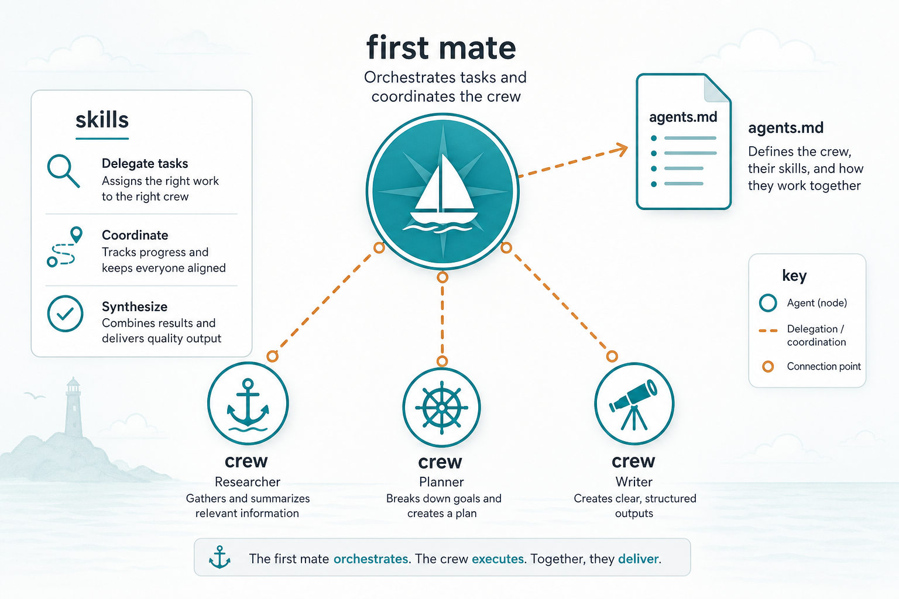

Field note · agent automationHermess
Hermess · automation done right
After OpenClaw opened the door to "agent controls everything", Hermess is the one that runs real automation reliably.
OpenClaw (pi)→
agent at the wheel→
Hermess does it well
01notes/09-agent-automation.md
Before thatOpenClaw
The first one gives that feeling
harness
pi — light & fast
Harness is thin, low friction: plug it in and run the task immediately. Prototype automation is extremely fast.
moment
Agent takes the wheel
Not just answers — reads/writes files, runs shell, chains steps. First time AI felt deeply integrated with the machine.
02OpenClaw · pi
Picturefirst mate · crew
Illustration

03slides/assets/hermess-crew.png
Hermessdone well
Why Hermess is memorable
smooth
Polished
Runs automation more reliably, with fewer stumbles.
trust
Dependable
Trusted enough for long task chains — no babysitting every step.
inherit
After OpenClaw
Keeps the "agent controls everything" spirit, but finishes the experience.
04Hermess
Takeawaywhen to use
OpenClaw vs Hermess
OpenClaw · pi
Quick feel
Shortest path to feel agent automation power — prototype, try it yourself.
Hermess
Production run
When you need stable, polished automation for real work.
Light harness to feel it; Hermess to run it.
endnotes/09-agent-automation.md